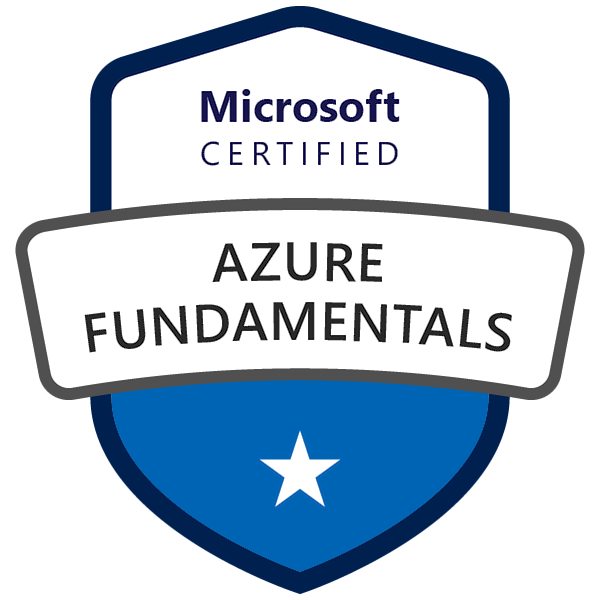
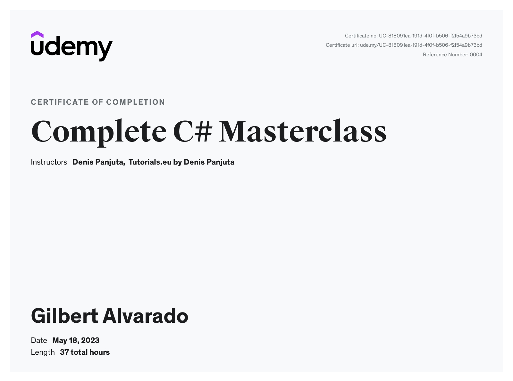
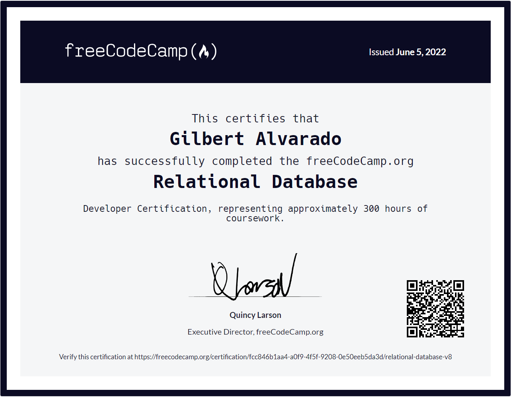

Azure Fundamentals AZ-900
June 2023

Hello! I'm Gilbert, an IT professional with experience in technical support, system administration, and application development, with a growing focus on cloud technologies and identity management. I enjoy solving complex problems, improving processes, and building reliable solutions that create meaningful impact.
This site serves as a place to highlight my professional experience and document my continued growth in Microsoft Azure, cloud computing, and infrastructure technologies.
August 2023 - Present
February 2022 - November 2024
October 2020 - February 2022
October 2020 - February 2022
October 2020 - February 2022
June 2012 - October 2020
June 2023

May 2023

June 2022

2018 - 2020
While attending the University at Albany, I built a strong foundation in software development and strengthened my teamwork, communication, and project management skills through collaborative projects and team-based assignments. I graduated cum laude with a cumulative GPA of 3.49 and was honored with the Spellman Academic Achievement Award.
Throughout my studies, I gained exposure to various technologies and projects that expanded my technical knowledge and practical experience. I also collaborated on a Software Engineering project called "Test Maker," where my team developed a web application while gaining hands-on experience with Microsoft Azure and modern development practices.
Soccer has been a passion of mine since childhood. I love playing the game and following my favorite team, Liverpool FC. Whether watching live matches or participating in friendly competitions, soccer brings me joy. Check out this video of LFC during their visit to the States.
One of my unique skills is lamp repair. I have honed my craftsmanship and attention to detail to bring new life to old or damaged lamps. From rewiring to replacing components, I enjoy restoring functionality and beauty to these cherished pieces.